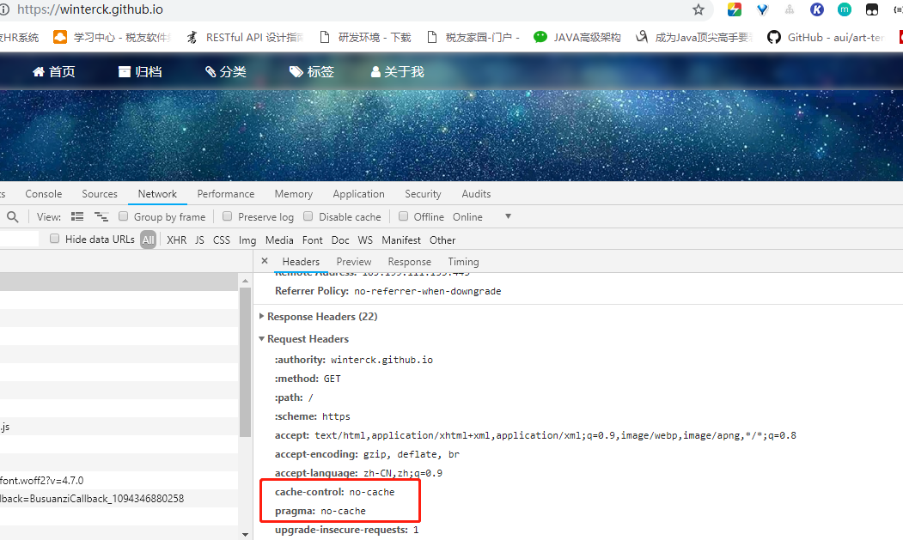
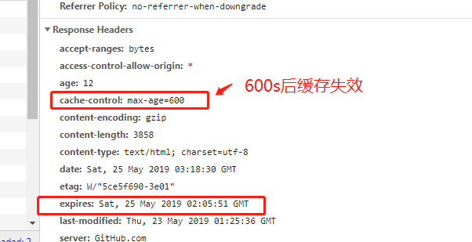
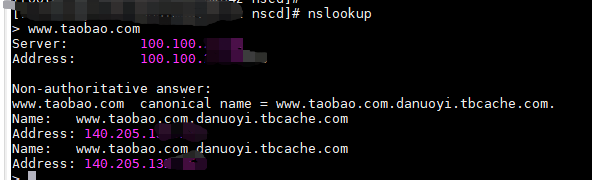
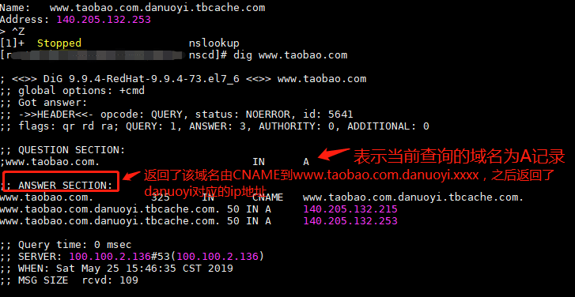

由于最近在看这本深入分析JavaWeb技术内幕的书籍，为了督促自己看完，也为了自己能总结所学习到的知识，所以来写一个这个系列，每文是每一章节我个人做的总结内容，希望自己不要犯懒，一周来一章总结！！ 早点变大神！！！
第一章
Linux 发起http请求，使用 curl +url 命令，如 curl "http://www.baidu.com" 可以发起http请求。查看头信息命令：curl "http://www.baidu.com -I" ，如果要增加请求头，可以用加 -H 如下：
1 | curl -I "http://xxxx.taobao.com:9999/repository.htm" -H "Cookie:cna=sd0/BjeZulwCAfIdAHkzZZqC; _t_track= 121.0.29.242.1320938379988839" |
HTTP状态码：
| 状态码 | 说明 |
|---|---|
| 200 | 客户端请求成功 |
| 302 | 临时跳转，跳转的地址通过Location指定 |
| 400 | 客户端请求有语法错误，不能被服务器识别 |
| 403 | 服务器收到请求，但是拒绝提供服务 |
| 404 | 请求的资源不存在 |
| 500 | 服务器发生不可预期的错误 |
浏览器查看请求头等
使用F12查看，不使用缓存刷新页面: Ctrl + F5
使用Ctrl + F5 刷新页面时，请求头会增加2个请求项 Pragma:no-cache 和 Cache-Control:no-cache 。
如图： 
Cache-Control请求字段被各个浏览器支持的较好，优先级也比较高，它和一些请求字段（如Expires）同时出现时，Cache-Control会覆盖其他字段。Expires 通常的格式是 Expires: Sat, 25 Feb 2019 12:22:17 GMT 超过这个时间时，缓存的内容将失效
如图: 1.2

| Head可选值 | 说明 |
|---|---|
| Public | 所有内容都将被缓存，在响应头中设置 |
| Private | 内容只缓存到私有缓存中，在响应头中设置 |
| no-cache | 所有内容都不会被缓存，在请求头和响应头中设置 |
| no-store | 所有内容都不会被缓存到缓存或Internet临时文件中，在响应头中设置 |
| must-revalidation/proxy-revalidation | 如果缓存的内容失效，请求必须发送到服务器玳理以进行重新验证，在请求头中设置 |
| max-age=xxx | 缓存的内容将在xxx秒后失效，这个选项只在HTTP1.1中可用，和Last-Modified一起使用时优先级较高，在响应头中设置 |
DNS域名解析过程
- 浏览器检查缓存中有没有域名对应的解析过的IP地址，如果有则结束，缓存时间通过TTL属性设置。
- 用户浏览器中没有，则查找操作系统缓存中是否有这个域名对应的DNS解析结果，这个可以自行设置，WIndows中为：
C:\Windows\System32\drivers\etc\hosts, Linux中为：/etc/hosts - 操作系统的网络配置会配置”DNS服务器地址”，操作系统会发送给这里设置的LDNS,也就是本区域的域名服务器，可以通过
ipconfig/ifconfig来查看这个地址。 - 如果LDNS仍然没有，会直接到Root Server域名服务器请求解析。
- Root Server会返回给本地域名服务器一个所查询域的主域名服务器（gTLD Server)地址，gTLD是国际顶级域名服务器，如 .com, .cn, .org等。
- 本地/区域域名服务器（Local DNS Server） 再向上一步返回的gTLD服务器发送请求。
- gTLD服务器查找并返回此域名对应的Name Server域名服务器的地址，这个Name Server通常就是你注册的域名服务器，例如你在某个域名服务提供商申请的域名，那么这个域名解析任务就由这个域名提供商的服务器来完成。
- Name Server服务器会查询存储的域名和IP的映射关系表，在正常情况下都根据域名得到IP，记录，连同一个TTL值返回给DNS Server域名服务器。
- 返回该域名对应的IP和TTL值，Local DNS Server会缓存这个域名和IP的对应关系。
- 把解析的结果返回给用户，用户根据TTL值缓存在本地系统缓存中，域名解析过程结束。
跟踪域名解析过程
在Linux 和Windows下可以使用nslookup 命令来查询域名的解析结果。
Linux下还可以使用 dig www.taobao.com 来查看DNS 的解析过程。
如图：

dig命令如图：

如果想看详细的域名解析过程，可使用命令(这个过程太长了就不截图了，请自行尝试)
1 | $ dig www.taobao.com +trace |
几种域名解析方式
域名解析记录主要分为 A记录、MX记录、CNAME记录、NS记录和TXT记录。
- A记录 ，A代表的是Address，用来指定域名对应的IP地址，如将·
item.taobao.com
指定到115·238．23·xxx，将switch.taobao.com指定到12L14．24．xxx。A记录可以将多个域名解析到一个IP地址，但是不能将一个域名解析到多个地址。 - MX记录 ，表示的是MailExchange，就是可以将某个域名下的邮件服务器指向自己的MailServer，如taobao.com域名的A记录IP地址是115．238.25·xxx，如果将MX记录设置为1巧·238·25·xxx，即xxx@taobao.com的邮件路由，DNS会将邮件发送到115．238.25·xxx所在的服务器，而正常通过web请求的话仍然解析到A记录的IP地址。
- CNAME记录 ，全称曰CanonicalName（别名解析）。所谓的别名解析就是可以为一个域名设置一个或者多个别名。如将
taobao.com到xulingbo.net，将也解析到xulingbo.net其中xulingbo.net分别是taobao.com和srcfan.com的别名。前面的跟踪域名解析中的“www.taobao.com/ 1542 IN CNAME www.gslb.taobao.com“就是CNAME解析。 - NS记录 ，为某个域名指定DNS解析服务器，也就是这个域名有指定的IP地址的DNS服务器去解析，前面的”
gslb.taobao.com/86400INNSgs1bns2.taobao.com”就是NS解析。 - TXT记录 ，为某个主机名或域名设置说明，如可以为
xulingbo.net设置TXT记录为“君山的博客/许令波”这样的说明。
CDN工作机制
CDN也就是内容分布网络（Content Delivery Network） ，它是构筑在现有Internet上的一种先进的流量分配网络，其目的是通过在现有的Internet中增加一层新的网络架构，将网站的内容发布到最接近用户的网络“边缘”，使用户可以就近取得所需的内容，提高用户访问网站的响应速度。有别于镜像，它比镜像更智能，可以做这样一个比喻：CDN=镜像(Mirror)+缓存(Cache)+整体负载均衡（GSLB）。因而，CDN可以明显提高Internet中信息流动的效率。